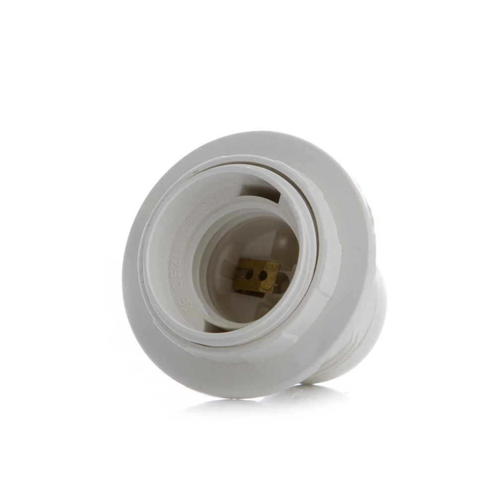

Lempos ir LED juostos | Apšvietimas | Senukai.lt
2020.10.29 06:32

Apie mus Atsiskaitymas Pristatymas Grąžinimas ir garantija Programėlė Užsakymo informacija SVARBI INFORMACIJA Parduotuvių tinklas Kontaktai Registruotis / Prisijungti Facebook Google Prisijungti
Nesate užsiregistravę?
Registruotis Mano profilis Senukai.lt užsakymai Išsaugotos prekės Pirkinių krepšelisJūsų krepšelis yra tuščias
Peržiūrėti krepšelį Patikusios prekės Prekių katalogas Buitinė technika Smulki buitinė technika namams Dulkių siurbliai Dulkių siurblių priedai Robotai - dulkių siurbliai Dulkių siurbliai - šluotos Smulki virtuvės technika Elektriniai virduliai Trintuvai Sulčiaspaudės Virtuviniai kombainai ir jų priedai Langų valytuvai, valymo garais įranga ir priedai Valymo garais įranga ir jų priedai Langų valymo robotai ir prietaisai Langų valymo priedai Stambi buitinė technika Skalbimo mašinos Džiovyklės Šaldytuvai Viryklės Įmontuojama technika Indaplovės Orkaitės Kaitlentės Šaldytuvai Kavos aparatai Automatiniai Pusiau automatiniai Kapsuliniai Kava, kavos kapsulės Elektriniai griliai, keptuvės, troškintuvai ir kiti Elektriniai griliai ir keptuvės Elektrinės krosnelės Skrudintuvai Sumuštinių keptuvės Grožio ir kūno priežiūros prietaisai Epiliatoriai Plaukų priežiūra Barzdaskutės Kirpimo mašinėlės Grožio ir sveikatos priežiūros prietaisai Elektriniai dantų šepetėliai ir priedai Kūno priežiūra Veido priežiūra Kraujospūdžio matuokliai Drabužių priežiūros technika Siuvimo mašinos Lygintuvai Drabužių garintuvai Elektriniai pūkų surinkėjai Klimato kontrolės technika Oro valymo prietaisai ir jų priedai Oro drėkintuvai ir priedai Ventiliatoriai Kondicionieriai Prekiniai ženklai Hansa Standart Dyson Electrolux Sodo prekės Tinklai, tvoros, vartai Metaliniai tinklai Tvorų segmentai Tvorų stulpai Vartai ir varteliai Šiltnamiai ir daigintuvai Sandėliavimo lentynos Sodo, daržo technika Grandininiai pjūklai Gyvatvorių žirklės Diskinės krūmapjovės Aeratoriai Lauko baldai Baldų komplektai Kėdės Pavėsinės ir jų priedai Sodo, daržo įrankiai Kopėčios Karučiai Kirviai Kastuvai Vejapjovės ir priedai Benzininės vejapjovės Elektrinės vejapjovės Akumuliatorinės vejapjovės Vejos pjovimo robotai Žoliapjovės ir priedai Benzininės žoliapjovės Elektrinės žoliapjovės Akumuliatorinės žoliapjovės Žoliapjovių lynai Aukšto slėgio plovyklos Aukšto slėgio plovyklos Sodo, daržo įranga Vazonai, floristikos prekės Durpės, trąšos, sėklos Prekiniai ženklai Visos prekės Baldai, interjeras, tekstilė Svetainės baldai Minkšti baldai Kavos staliukai Televizorių staliukai Sėdmaišiai Lauko baldai Masterjero lauko baldai Baldų komplektai Stalai Kėdės Vonios kambario baldai Vonios baldų komplektai Pastatomos vonios spintelės Pakabinamos vonios spintelės Vonios kambario lentynėlės Biuro baldai Darbo stalai Lentynos Lankytojų ISO kėdės Vadovo kėdės Virtuvės, prieškambario baldai Virtuvės stalai Virtuvės kėdės Prieškambario baldai Kilimai, kilimėliai Kilimai Vaikiški kilimai Durų kilimėliai Vonios kambario kilimėliai Baldai, lentynos, seifai Vaikų baldai Miegamojo baldai Sandėliavimo lentynos Seifai, pašto dėžutės Užuolaidos, žaliuzės Dieninės užuolaidos Naktinės užuolaidos Ritininės užuolaidos Žaliuzės Miegamojo tekstilė Patalynės užvalkalai Paklodės Pagalvės Antklodės Namų tekstilė Rankšluoščiai Lovatiesės ir pledai Dekoratyvinės pagalvėlės Staltiesės ir servetelės Interjero detalės Vazos Žvakės Dekoravimo lėkštės Nuotraukų rėmeliai, albumai NAUJOS KOLEKCIJOS Masterjero Domoletti Sportas, laisvalaikis, turizmas Treniruokliai ir svoriai Svoriai, svarmenys, grifai Elipsiniai treniruokliai Dviračiai treniruokliai Gimnastikos, mankštos prekės Gimnastikos kamuoliai Gimnastikos kilimėliai Gimnastikos ir masažiniai lankai Dviračiai ir riedžiai Suaugusiųjų dviračiai Paauglių dviračiai Vaikiški dviračiai Dviračių priedai Batutai ir čiuožyklos Batutai Čiuožyklos Kepsninės, rūkyklos, priedai Kieto kuro kepsninės Dujinės kepsninės Kepsninių įrankiai Sporto prekės ir priedai Kovos menai Krepšinis Futbolas Tinklinis Hamakai, sodo supynės Sūpynės Hamakai Turizmo prekės, žūklė Palapinės Miegmaišiai Mobilūs biotualetai Turistiniai baldai Valtys, irklentės ir priedai Pripučiamos valtys Plastikinės valtys Valčių varikliai, irklai ir dalys Paspirtukai, riedlentės Čiužiniai, pagalvėlės Baseinai ir čiužiniai Bestway laisvalaikio prekės Visos prekės Telefonai, planšetiniai kompiuteriai Mobilieji telefonai Samsung telefonai Xiaomi telefonai Huawei telefonai Nokia telefonai Planšetiniai kompiuteriai, knygų skaityklės ir priedai Planšetiniai kompiuteriai Knygų skaityklės Krepšiai, dėklai planšetiniams kompiuteriams Priedai planšetiniams kompiuteriams Išmanieji laikrodžiai ir apyrankės Išmanieji laikrodžiai Išmaniosios apyrankės Sportiniai laikrodžiai, apyrankes Priedai mobiliems ir išmaniems telefonams 12-24 V automobiliniai įkrovikliai ir adapteriai Dėklai, dangteliai ir įmovos Ekrano apsauga Kiti priedai Racijos Belaidžiai ir stacionarūs telefonai Apple parduotuvė iPhone iPad MacBook Apple Watch TV, audio, video, žaidimų kompiuteriai Televizoriai ir priedai Televizoriai TV laikikliai TV priedėliai TV antenos ir jų laikikliai Garso aparatūra Muzikiniai centrai „Soundbar“ ( akustinės sistemos) Kolonėlės ir garso sistemos Stiprintuvai Video aparatūra DVD grotuvai Blu-Ray grotuvai Žaidimų kompiuteriai Žaidimų konsolės Vairai Valdymo pulteliai Ausinės žaidimams Fotografijos, optikos prekės Fotoaparatai Objektyvai ir blykstės Skaitmeniniai nuotraukų rėmeliai Kameros Dronai, riedžiai, paspirtukai ir išmanioji technika Elektriniai paspirtukai Riedžiai Kiti įrenginiai Dronai ir jų priedai Kompiuterinė technika, biuro prekės Nešiojami kompiuteriai ir priedai Nešiojami kompiuteriai Dėklai, krepšiai, kuprinės nešiojamiems kompiuteriams Nešiojamų kompiuterių aušintuvai Įkrovikliai (pakrovėjai), adapteriai nešiojamiems kompiuteriams Spausdintuvai Daugiafunkciai spausdintuvai 3D spausdintuvai ir priedai Fotospausdintuvai Lazeriniai spausdintuvai Skeneriai Planšetiniai kompiuteriai, knygų skaityklės ir priedai Planšetiniai kompiuteriai Knygų skaityklės Krepšiai, dėklai planšetiniams kompiuteriams Priedai planšetiniams kompiuteriams Išoriniai kompiuterių priedai Atminties laikmenos Klaviatūros, jų priedai Pelės kilimėliai Internetinės kameros Adapteriai, kabeliai ir laidai Stacionarūs kompiuteriai, monitoriai, UPS Stacionarūs kompiuteriai Vidiniai kompiuterių priedai LED / LCD monitoriai Monitorių laikikliai Žaidimų kompiuteriai ir priedai Žaidimų konsolės Vairai Valdymo pulteliai Ausinės žaidimams Biuro reikmenys ir kanceliarinės prekės Kanceliarinės smulkmenos Kopijavimo, spalvotas ir kitas popierius Rašymo priemonės Lipnūs lapeliai Spausdintuvų eksploatacinės medžiagos Projektoriai ir priedai prezentacijoms Programinė įranga Įrišimo, laminavimo prietaisai, skaitytuvai Banknotų skaičiuokliai ir valiutų detektoriai Visos prekės Tinklo produktai, kompiuterių komponentai Bevielio tinklo įranga Maršrutizatoriai Tinklo šakotuvai Jungiamieji laidai ir adapteriai Signalo stiprintuvai (Range Extender) Kietieji diskai, HDD ir SSD HDD kietieji diskai SSD kietieji diskai Atminties kortelių skaitytuvai Tinklinės duomenų saugyklos (NAS) Korpusas ir aušinimas Korpusai Aušintuvai Oro aušinimo sistemos priedai (Termopasta, Rėmeliai ir t.t.) Maitinimo blokai (PSU) Komponentai Procesoriai Operatyvioji atmintis (RAM) Garso plokštės Pagrindinės plokštės Serveriai ir serverių komponentai Serverių spintos Serveriai Serverių spintų priedai Serverių operatyvioji atmintis Laidinio tinklo įranga Priedai tinklo produktams Išmanūs namai Optiniai keitikliai Statyba ir remontas Durys, jų dalys, furnitūra Vidaus durys Lauko durys Durų staktos ir apvadai Laiptai, langai ir jų dalys Laiptai Laiptų dalys Stoglangiai ir jų dalys Langų furnitūra Elektros instaliacija Valdymo ir kontrolės įranga Kabeliai ir laidai Kištukiniai lizdai ir jungikliai Ilgintuvai ir skirstytuvai Birios statybinės medžiagos Glaisto mišiniai Tinko mišiniai Plytelių klijai Išlyginamieji mišiniai Hidroizoliacinės medžiagos Hidroizoliacinės plėvelės Hermetikai Hidroizoliacinis skystis Stogų danga Šiferinė stogų danga Bituminė stogų danga Stiklo plastiko danga Čerpės Spynos ir jų dalys Įleistinės spynos Pridėtinės spynos Burbulinės spynos Pakabinamos spynos Tvirtinimo detalės Medsraigčiai Savisriegiai Inkariniai varžtai Tvirtinimo kampai Darbo apranga Darbo drabužiai Darbo batai Darbo pirštinės Saugos prekės Polikarbonatiniai stogeliai Statybinės plokštės Ceresit statybinės medžiagos Briko statybinės medžiagos Palangės ir jų priedai Visos prekės Apšvietimas Vidaus šviestuvai Pakabinami šviestuvai Lubiniai šviestuvai Sieniniai šviestuvai Staliniai šviestuvai Lauko šviestuvai Pakabinami šviestuvai Tvirtinami šviestuvai Įleidžiami šviestuvai Pastatomi šviestuvai Specialiųjų patalpų šviestuvai Tvirtinami šviestuvai Įleidžiami šviestuvai Pakabinami šviestuvai Diskotekų apšvietimas Lempos ir LED juostos Liuminescencinės lempos LED lempos LED juostos, šviečiantys kabeliai Halogeninės lempos Žibintuvėliai Įkraunami žibintuvėliai Žibintuvėliai su elementais Žibintuvėlių priedai ir jų dalys Šviestuvų detalės ir kitos apšvietimo prekės Jungikliai Starteriai Droseliai Trio šviestuvai Išmanusis apšvietimas Santechnika ir šildymas Vonios ir jų priedai Vonios Vonių priedai Vonios užuolaidos ir karnizai Dušo įranga Paprastosios dušo kabinos Masažinės dušo kabinos Dušo padėklai Maišytuvai, čiaupai, jų dalys Vonių maišytuvai Dušų maišytuvai Virtuvės maišytuvai Praustuvų maišytuvai Virtuvės plautuvės, priedai Plautuvės, jų dalys Maisto smulkintuvai, jų dalys Unitazai, bidė, pisuarai Unitazai ir jų priedai Bidė ir jų priedai Nuleidimo mechanizmai, priedai Pisuarai Vonios kambario baldai Vonios spintelės Vonios komplektai Vonios veidrodžiai Vonios kambario tekstilė Šildymo prietaisai, kuras Vandens šildytuvai, priedai Šildymo katilai ir jų dalys Krosnelės, saunų įranga Židiniai ir jų dalys Praustuvai ir jų dalys Paprasti praustuvai Baldiniai praustuvai Praustuvų dalys Rankšluosčių džiovintuvai Vandeniniai džiovintuvai Elektriniai džiovintuvai Vandens siurbliai ir hidroforai Vandens filtravimo priemonės Nuotekų ir drenažo sistemos Santechninės jungtys, ventiliai Sifonai, trapai Buitiniai ventiliatoriai Vandens tiekimo sistemos Visos prekės Apdailos prekės Grindų apdailos medžiagos Laminuotos medienos plaušo grindys Parketas ir parketlentės Grindjuostės Žiūrėti daugiau Plytelės Keraminės plytelės Akmens masės plytelės Natūralaus akmens plytelės Žiūrėti daugiau Tapetai ir priedai Skystieji tapetai Viniliniai tapetai Fototapetai Žiūrėti daugiau Medienos impregnantai, antiseptikai Medienos impregnantai Medienos antiseptikai Dažai, dažų priedai Emaliniai dažai Emulsiniai dažai Aerozoliniai dažai Žiūrėti daugiau Dailylentės, plokštės Dailylentės Dekoratyvinės plokštės Lubos Klijuojamos lubų plokštės Kabamosios lubos Juostos, sujungimai, kampai Sujungimo juostos Kampai Apdailos kampai Lakas Lakas vidaus darbams Lakas išorės darbams Glaistas, gruntas Glaistas Gruntas Klijai, paviršiaus paruošimo medžiagos Klijai Paviršių paruošimo medžiagos Paviršių padengimo medžiagos Dekoratyviniai tinkai Įrankiai Akumuliatoriniai įrankiai Akumuliatoriniai suktuvai, gręžtuvai Akumuliatoriniai pjovimo įrankiai Akumuliatoriniai šlifuokliai Įrankių akumuliatoriai Elektriniai įrankiai Elektriniai šlifuokliai Elektriniai pjovimo įrankiai Elektriniai gręžimo įrankiai Elektriniai perforatoriai Aukšto slėgio plovyklos Aukšto slėgio plovyklos Aukšto slėgio plovyklų priedai Suvirinimo įranga Suvirinimo aparatai Suvirinimo medžiagos Apsauginiai skydai Suvirinimo įrangos priedai Įrankių dėžės, dėklai Plastikinės dėžės Metalinės dėžės Įrankių spintelės Įrankių dėklai Mechaniniai įrankiai Sukimo, veržimo įrankiai Pjovimo įrankiai Kalimo įrankiai Gręžimo įrankiai Abrazyvinės medžiagos Abrazyviniai diskai Abrazyvinės šlifavimo medžiagos Dažymo ir tapetavimo įrankiai Teptukai ir šepečiai Voleliai Maišytuvų antgaliai Tapetavimo įrankiai Prekiniai ženklai Rubi įrankiai Forte Tools įrankiai Kopėčios ir kėlimo įranga Betono maišyklės Pneumatiniai įrankiai Statybiniai siurbliai Kompresoriai Transportavimo vežimėliai Generatoriai Visos prekės Žaislai, prekės vaikams Žaislai mergaitėms Lėlės, lėlių namai Namų apyvokos žaislai Grožio žaislai Žaislai berniukams Radijo bangomis valdomi žaislai Dronai, lėktuvai Žaislinės transporto priemonės Robotai Žaislai kūdikiams Mediniai žaislai Lavinamieji žaislai Žaidimų kilimėliai Supamieji žaislai LEGO® LEGO® Duplo LEGO® Friends LEGO® City LEGO® Ninjago Įvairūs žaislai Konstruktoriai Lavinamieji žaislai Pliušiniai žaislai Muzikanto žaislai Kūrybiniai ir lavinimo žaislai Stalo žaidimai, žaidimų stalai Šeimos stalo žaidimai Vaikų stalo žaidimai Dėlionės Stalo futbolas Lauko žaislai Supynės Paspiriamos mašinos Sporto žaislai Vandens žaislai Vaikų ir kūdikių prekės Automobilinės vaikų kėdutės Vaikiški vežimėliai Nešioklės kūdikiams Kelioninės lovelės ir maniežai Vaikų švenčių prekės Balionai Žvakutės Čiuožyklos, nameliai Smėlio dėžės Namų apyvoka ir buitis Popieriaus gaminiai Tualetinis popierius Popieriniai rankšluoščiai Vienkartinės nosinaitės Skalbimo priemonės Skalbimo milteliai Skystieji skalbikliai, kapsulės Skalbinių minkštikliai Balikliai Valikliai ir plovikliai Indų plovikliai Langų valikliai Grindų valikliai WC valikliai Namų švara ir valymas Šiukšliadėžės Šluotos, šepečiai Kempinės ir šluostės Virtuvės reikmenys Puodai Keptuvės Peiliai, pjaustymo lentelės Dubenys, dubenėliai Stalo serviravimo reikmenys Indai, servizai Šakutės, peiliai, šaukštai Taurės, stiklinės, ąsočiai Puodeliai Maisto gaminimo reikmenys Kepimo skardos, formos Arbatinukai ir kavinukai Maisto gaminimo įrankiai Kepimo popierius, folija Namų kvapai Purškiamieji oro gaivikliai Namų kvapai, smilkalai Tualetų gaivikliai Skalbimas, lyginimas Skalbinių džiovyklos Lyginimo lentos Skalbinių dėžės Skalbinių segtukai Kibirai, dubenys Batų ir rūbų priežiūra Batų priežiūros priemonės Pūkų rinkikliai Rūbų pakabos Priemonės nuo kandžių Dėžės, maišai, pakavimas Daiktadėžės Maišai ir maišeliai Virvės, špagatai Vakuuminiai maišai Autoprekės Automobilių garso ir vaizdo aparatūra Vaizdo registratoriai Magnetolos Kolonėlės Navigacijos Automobilių priežiūros prekės Automobilių kosmetika Tepalai, alyvos Automobilių priežiūros priemonės Akumuliatoriai Padangos Naujos žieminės padangos Restauruotos žieminės padangos Gyvūnų prekės Šunims Maistas, skanėstai ir vitaminai Pavadėliai, petnešos, antsnukiai Guoliai šunims Dubenėliai Katėms Maistas, skanėstai ir vitaminai Kačių kraikas Kačių tualetai Draskyklės Žuvims Akvariumai Akvariumų įranga Akvariumų dekoracijos Sausas maistas žuvims Graužikams Narvai Maistas, skanėstai ir vitaminai Kraikas, šienas Dubenėliai, girdyklos Paukščiams Inkilai Lesyklos Narvai Lesalas, skanėstai Kvepalai, kosmetika, higiena Kvepalai Kvepalai moterims Kvepalai vyrams Kvepalų rinkiniai Populiariausi kvepalai Hugo Boss kvepalai Versace kvepalai Calvin Klein kvepalai Chanel kvepalai Dekoratyvinė kosmetika Priemonės veidui Priemonės akims Priemonės lūpoms Priemonės nagams Plaukų priežiūrai Šampūnai Kondicionieriai, kaukės Plaukų stiprinimo priemonės Plaukų formavimo priemonės Kosmetika veidui Veido kremai Paakių kremai Valikliai, tonikai Šveitikliai, kaukės Kosmetika kūnui Kūno losjonai, kremai Kūno šveitikliai Anticeliulitinės priemonės Rankų, kojų priežiūra Priemonės akims Akių šešėliai Akių pieštukai, apvadai Blakstienų tušai Priemonės antakiams Priemonės veidui Makiažo pagrindai Maskuojamosios priemonės Sausos ir birios pudros Skaistalai Priemonės lūpoms Lūpų dažai Lūpų blizgiai Lūpų balzamai Lūpų pieštukai Asmens higienai Kosmetika vyrams Priemonės nagams Plaukų šepečiai, aksesuarai Visos prekės Apranga, avalynė, aksesuarai Drabužiai moterims Sportiniai apatiniai drabužiai moterims Žieminės striukės moterims Moteriški marškinėliai sportui ir fitnesui Sportinės kelnės, leginsai ir šortai moterims Avalynė moterims Batai ir basutės moterims Vyriški drabužiai Vyriški marškinėliai sportui ir fitnesui Vyriškos sportinės kelnės ir šortai Vyriškos kelnės ir šortai turizmui Žieminės striukės vyrams Vyriška avalynė Sportinė avalynė vyrams Batai ir basutės vyrams Aksesuarai Sportiniai ir kasdieniai akiniai nuo saulės Avalynė ir kojinės Knygos Grožinė literatūra Romanai Detektyvai Fantastinės knygos Klasika Knygos vaikams ir jaunimui Knygos vaikams Spalvinimo knygelės Knygos paaugliams ir jaunimui Receptų knygos Psichologijos knygos Istorinės knygos Pomėgiai Patarimai Leidiniai Patarimai Programa Naujakurys BALDAI Prekių ženklai Akcijos % „Draugų ratas“ Prisijunkite prie „Draugų rato“ ir sutaupykite! Sužinoti daugiau … Senukai Apšvietimas Lemputės ir LED juostos Apšvietimas Lemputės ir LED juostos Liuminescencinės lemputės LED lemputės LED juostos, šviečiantys kabeliai, priedai Energiją taupančios lemputės Halogeninės lemputės Kaitrinės lemputės Dujinės lemputės Specialios lemputės (šaldytuvams, viryklėms ir kt.) Šios savaitės pasiūlymai -30 % lauko apšvietimui su nuolaidos kodu: TAKE30 Žalia kaina – žema kaina! OSRAM/LEDVANCE produkcijai ir BELLALUX lemputėms -40 % EGLO, TRIO ir REALITY apšvietimo prekėms -35 % DOMOLETTI šviestuvams iki -50 % VILMA elektros instaliacijos prekėms -30 %Lemputės ir LED juostos
Liuminescencinės lemputės LED lemputės LED juostos, šviečiantys kabeliai, priedai Energiją taupančios lemputės Halogeninės lemputės Kaitrinės lemputės Dujinės lemputės Specialios lemputės (šaldytuvams, viryklėms ir kt.)Šios savaitės pasiūlymai
Idėjos ir patarimai
Kaip išsirinkti šviestuvą? Interjero viduje svarbu kompetentingai derinti natūralią šviesą, įeinančią pro langą, ir dirbtinę šviesą, kurią skleidžia lempos ar įrenginiai, rasti pusiausvyrą tarp jų ir išlaikyti kūrybišką požiūrį į panaudojimo galimybes.ŠviestuvaiSietynai – tai tradic... Skaityti daugiau Kokias lemputes pasirinkti kiekvienam namų kambariui? Paprastai elektrikų klausia – kokias lemputes pirkti. Jie trumpai glaustai atsako: pirkite LED. Ir tiek. Bet kokio dydžio, kiek vatų, koks cokolis? Čia kyla tiek daug klausimų, į kuriuos atsakymų rasti gana sunku. Pabandysime pateikti informacijos, kokias ... Skaityti daugiau Patalpų apšvietimo tendencijos Sėkmingas apšvietimas yra kur kas daugiau nei paprastas šviestuvų išdėstymas erdvėje. Apšvietimas yra apdailos elementas, kurį galima panaudoti įvairiais būdais, pavyzdžiui, sukuriant atitinkamą atmosferą. Apšvietimas taip pat turi būti reguliuojamas. Apšv... Skaityti daugiau Šviestuvų rūšys Interjero viduje svarbu kompetentingai derinti natūralią šviesą, įeinančią pro langą, ir dirbtinę šviesą, kurią skleidžia lempos ar įrenginiai, rasti pusiausvyrą tarp jų ir išlaikyti kūrybišką požiūrį į panaudojimo galimybes.ŠviestuvaiSietynai – tai tradic... Skaityti daugiau Lemputės – tai patalpų arba automobilio apšvietimui sukurti naudojami įrenginiai. Lemputės būna keturių pagrindinių tipų: kaitrinės, liuminescencinės, halogeninės ir šviesos diodų (LED). Kaitrinės lemputės skleidžia šviesą dėl įkaitusio volframo siūlelio. Liuminescencinės (fluorescencinės) lemputės veikia dujinės iškrovos principu, kai dėl elektros srovės sužadinami gyvsidabrio garai, sukuriantys ultravioletinę šviesą. Halogeninės lemputės veikia panašiai kaip kaitrinės, tačiau turi mažesnę kolbą, pripildytą inertinių dujų. LED lemputės veikia dėl šviesos diodų, kurie skleidžia tik vienos spalvos šviesą. Pačios taupiausios yra LED lemputės, tačiau jos ir brangiausios. Šviesos diodų lemputės gali būti įprastos formos, pailgos arba suklijuotos į juostą. Liuminescencinės lempos taip pat yra taupesnės, be to, tarnauja ilgiau nei kaitrinės. Kad ir kokios lemputės Jums būtų reikalingos, jų rasite internetinėje parduotuvėje senukai.lt. Įvairių tipų, galingumo ir formų lempučių įsigykite jau dabar!Parsisiųskite Senukai mobiliąją programėlę
Prekių kategorijos
Buitinė technika Telefonai, planšetiniai kompiuteriai TV, audio, video, žaidimų kompiuteriai Kompiuterinė technika, biuro prekės Tinklo produktai, kompiuterių komponentai Elektronikos prekės Statyba ir remontas Įrankiai Santechnika ir šildymas Apdailos prekės Interjeras, baldai, tekstilė Apšvietimas Namų apyvoka ir buitis Sportas, laisvalaikis, turizmas Žaislai, prekės vaikams Gyvūnų prekės Sodo prekės Kvepalai, kosmetika, higienaInternetinė parduotuvė
Apie mus Kaip pirkti Senukai.lt? Užsakymo informacija Specialūs pasiūlymai „Draugų rato“ lojalumo programa Nemokamas Lizingas* Nuolaidos kodai Patarimai Atsiskaitymas Pristatymas Pirkimo taisyklės Grąžinimas ir garantija Privatumo politika Tiesioginės rinkodaros partnerių sąrašas Moki 3 Mobilioji programėlė DUK KontaktaiĮmonės informacija
Parduotuvių tinklas Įmonės tinklapis Karjeros galimybės Mylimiausia lojalumo programa Programa Naujakurys Leidiniai Garantinio remonto stebėjimas Sąskaitų faktūrų savitarna KontaktaiMes socialiniuose tinkluose
© 2020 UAB „Kesko Senukai Digital“
- lempos | pigu.lt
- Modernūs ir klasikiniai šviestuvai Jūsų namams - SID lempos
- Šviestuvai, LED šviestuvai, LED apšvietimo sprendimai ...
- Keičiamos lempos
- Infraraudonųjų spindulių šildytuvai, šildymo sistemos ...
- Lempos, Šviesos šaltiniai - Ardena
- Šviestuvai internetu | Lempa LT
- LED lemputės | Lemputės ir LED juostos | Senukai.lt
- LED Šviestuvai - LED Juostos - LED Panelės - LED ...
- Dekoratyvinės vintažinės lempos | Šviesos centras ...
- lempos | pigu.lt
Modernūs ir klasikiniai šviestuvai Jūsų namams. Šviestuvai. Rodoma 1-21 iš 365 (18 psl.)
- Modernūs ir klasikiniai šviestuvai Jūsų namams - SID lempos
T5. T8. LED lempos 10 Produktai Šviestuvai su saulės baterija 26 Produktai Sieniniai šviestuvai 118 Produktai Pakabinami šviestuvai 89 Produktai LED šviestuvai 108 Produktai LED šviesos valdikliai 30 Produktai LED švieslentės 14 Produktai LED pramoniniai šviestuvai 85 Produktai
- Šviestuvai, LED šviestuvai, LED apšvietimo sprendimai ...
Lempa LT – apšvietimo sprendimų kompanija, teikianti profesionalias apšvietimo projektavimo, konsultavimo ir mažmeninės prekybos šviestuvais paslaugas. Mūsų salone ir interneto parduotuvėje rasite nuolat kintančią pripažintų pasaulio gamintojų šviestuvų ekspozicija, išsamią informaciją apie naujausias apšvietimo tendencijas, profesionalų patarimus.
- Keičiamos lempos
Jei domina TL, P, T5 ir amalgam keičiamos UV-C lempos vandens sterilizatoriams, mūsų specializuotoje internetinėje parduotuvėje pakantinių lempų dekoratyvinių tvenkinių, baseinų, kūdrų ir akvariumų vandeniui dezinfekuoti, valyti. PIRKITE INTERNETU – didel
- Infraraudonųjų spindulių šildytuvai, šildymo sistemos ...
UV filtravimo lempos veikia ultravioletinių spindulių pagrindu, ultravioletinės lempos sunaikina mikrobų, bakterijų, virusų, dumblių ir įvairių grybelių DNR ir tokiu būdu užkerta kelią jų veisimuisi, augimui bei dauginimuisi.
- Lempos, Šviesos šaltiniai - Ardena
Viltesa | Kaitrinės lempos. 46 Valdymo ir kontrolės įranga 7 Automatiniai jungikliai AE-; AP- tipo OEZ SCHNEIDER IEK ABB BEMKO Kiti 3 Srovės nuotėkio relės BEMKO srovės nuotėkio relės
- Šviestuvai internetu | Lempa LT
LED lempos yra ekologiškesnės, ekonomiškesnės ir ilgaamžiškesnės negu kaitrinės lempos. Renkantis LED lemputę, reikia atsižvelgti į cokolio dydį, lempos dydį ir formą bei vietą, kurioje ji bus naudojama, taip pat skleidžiamos šviesos srautą ir sklidimo kampą.
- LED lemputės | Lemputės ir LED juostos | Senukai.lt
LED lempos pasižymi išskirtiniu taupumu bei modernumu ir šiais aspektais praktiškai neturi sau lygių visoje rinkoje. Tuo pačiu, LED lempos yra visiškai saugios, be gyvsidabrio ir kitų kenksmingų medžiagų, neskleidžia nei ultravioletinių, nei infraraudonųjų spindulių, nemirga ir užtikrina ypač kokybišką ir jaukų apšvietimą. ...
- LED Šviestuvai - LED Juostos - LED Panelės - LED ...
Infraraudonųjų spindulių šildytuvai arba šildymas infraraudonaisiais spinduliais (sutrumpintai – IR spinduliai) žmogui sukuria tokį patį pojūtį, kaip ir maloniai kaitinantis po vasariškais Saulės spinduliais. Tačiau, skirtingai nei mums įprasta Saulė, IR šiluma neskleidžia sveikatai pavojingų UV spindulių.
- Dekoratyvinės vintažinės lempos | Šviesos centras ...
Šios lempos yra šiuolaikiškas ir ekonomiškas sprendimas Jūsų namams, o įmonės darbuotojai Jums visada galės patarti, kuris variantas tinkamesnis apšviesti Jūsų norimą plotą. Praktiškos lempos. Šviesos diodai ko gero iš tikrųjų yra pats praktiškiausias pasirinkimas, kokį tik galite priimti rinkdamiesi apšvietimo sistemą ...
Modernūs ir klasikiniai šviestuvai Jūsų namams. Šviestuvai. Rodoma 1-21 iš 365 (18 psl.)
T5. T8. LED lempos 10 Produktai Šviestuvai su saulės baterija 26 Produktai Sieniniai šviestuvai 118 Produktai Pakabinami šviestuvai 89 Produktai LED šviestuvai 108 Produktai LED šviesos valdikliai 30 Produktai LED švieslentės 14 Produktai LED pramoniniai šviestuvai 85 Produktai
Lempa LT – apšvietimo sprendimų kompanija, teikianti profesionalias apšvietimo projektavimo, konsultavimo ir mažmeninės prekybos šviestuvais paslaugas. Mūsų salone ir interneto parduotuvėje rasite nuolat kintančią pripažintų pasaulio gamintojų šviestuvų ekspozicija, išsamią informaciją apie naujausias apšvietimo tendencijas, profesionalų patarimus.
Jei domina TL, P, T5 ir amalgam keičiamos UV-C lempos vandens sterilizatoriams, mūsų specializuotoje internetinėje parduotuvėje pakantinių lempų dekoratyvinių tvenkinių, baseinų, kūdrų ir akvariumų vandeniui dezinfekuoti, valyti. PIRKITE INTERNETU – didel
UV filtravimo lempos veikia ultravioletinių spindulių pagrindu, ultravioletinės lempos sunaikina mikrobų, bakterijų, virusų, dumblių ir įvairių grybelių DNR ir tokiu būdu užkerta kelią jų veisimuisi, augimui bei dauginimuisi.
Viltesa | Kaitrinės lempos. 46 Valdymo ir kontrolės įranga 7 Automatiniai jungikliai AE-; AP- tipo OEZ SCHNEIDER IEK ABB BEMKO Kiti 3 Srovės nuotėkio relės BEMKO srovės nuotėkio relės
LED lempos yra ekologiškesnės, ekonomiškesnės ir ilgaamžiškesnės negu kaitrinės lempos. Renkantis LED lemputę, reikia atsižvelgti į cokolio dydį, lempos dydį ir formą bei vietą, kurioje ji bus naudojama, taip pat skleidžiamos šviesos srautą ir sklidimo kampą.
LED lempos pasižymi išskirtiniu taupumu bei modernumu ir šiais aspektais praktiškai neturi sau lygių visoje rinkoje. Tuo pačiu, LED lempos yra visiškai saugios, be gyvsidabrio ir kitų kenksmingų medžiagų, neskleidžia nei ultravioletinių, nei infraraudonųjų spindulių, nemirga ir užtikrina ypač kokybišką ir jaukų apšvietimą. ...
Infraraudonųjų spindulių šildytuvai arba šildymas infraraudonaisiais spinduliais (sutrumpintai – IR spinduliai) žmogui sukuria tokį patį pojūtį, kaip ir maloniai kaitinantis po vasariškais Saulės spinduliais. Tačiau, skirtingai nei mums įprasta Saulė, IR šiluma neskleidžia sveikatai pavojingų UV spindulių.
Šios lempos yra šiuolaikiškas ir ekonomiškas sprendimas Jūsų namams, o įmonės darbuotojai Jums visada galės patarti, kuris variantas tinkamesnis apšviesti Jūsų norimą plotą. Praktiškos lempos. Šviesos diodai ko gero iš tikrųjų yra pats praktiškiausias pasirinkimas, kokį tik galite priimti rinkdamiesi apšvietimo sistemą ...
